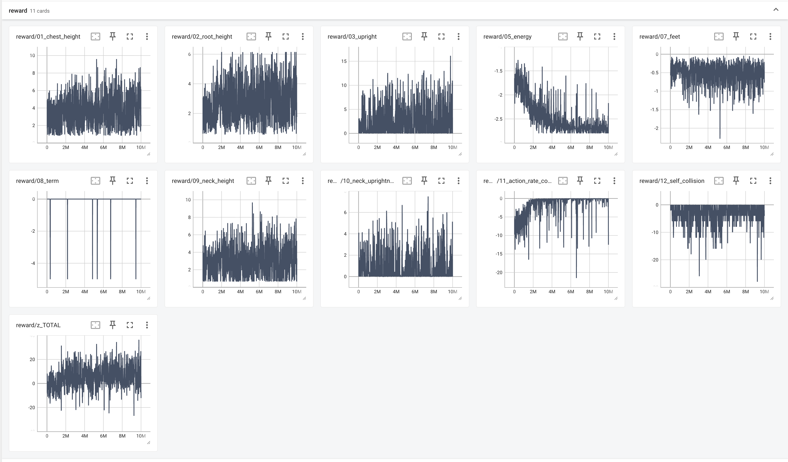
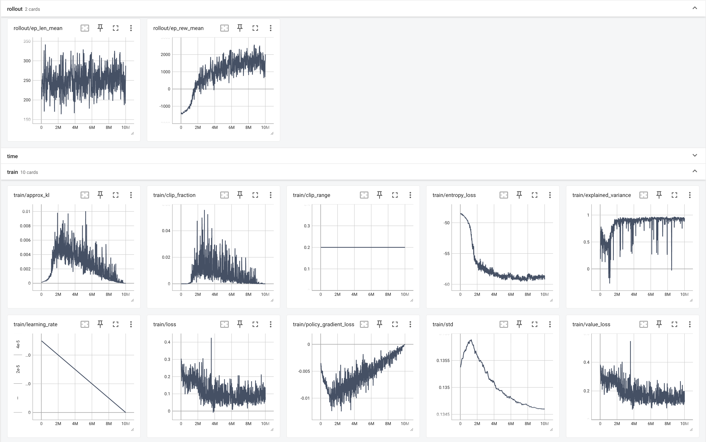

Reinforcement Learning: Training a Humanoid to Stand in PyBullet with Proximal Policy Optimization
February 28, 2026
After getting the hang of the PyBullet environment, I attempted the challenging task of training a humanoid robot to stand using reinforcement learning techniques. I shall document my journey in this blog post, and structure it similar to a research paper for organization purposes. I think I will focus on my "final" result -- it might take too long to document everything I tried! I tuned all kinds of parameters and configurations over the past several months -- Reinforcement learning is for sure a tedious and challenging beast! I am utterly fascinated by this whole process of breathing life into a robot -- to see what it is able to learn through (almost) random movements!
Summary
I used Proximal Policy Optimization to train a 28-degree-of-freedom humanoid to stand starting from the prone (lying face down) position. I used direct torque application to the joints, so the actions outputted by the policy represent torques, one scalar for each DOF. Typically (I believe), these tasks are trained with position-control, and training in torque-space significantly increases the difficulty of the problem. Link masses and joint dampening were modified from the default settings to facilitate balance and control. Finding a working reward function was a tedious and time consuming exercise, and will be detailed in the methodology section. In the "final" result, I trained for 10 million steps on my local MacBook (6.5 hours) to achieve stable and improving learning metrics. The humanoid is able to force itself into an upright standing position, but fails to maintain the pose for long. Although it is not a perfectly balanced stand, and the movement is still quite chaotic, I am happy with the result considering the difficulty of the problem and the small number of steps trained. A more refined stand would require significantly more effort to fine-tune parameters and configurations as well as significantly longer training.
Methodology, Setup, and Configuration
Compute
All work was done on a 2020 M1 MacBook Pro with 8gb of memory.
Physics Engine
All training was done in PyBullet, with the following Engine Parameters. I needed a high fidelity simulation to account for numerous collisions and complex dynamics.
| Parameter | Value | Rationale |
|---|---|---|
| Time-Step | 480 Hz | Many time-steps per second to have high fidelity simulation. |
| numSubSteps | 4 | High number of updates per time step to improve fidelity of simulation. |
| numSolverIterations | 150 | Relatively high number of calculations to produce good physics. |
| erp | 0.2 | Fix 20% of the "error" every frame. |
| contactSlop | 0.001 | Strict contact calculations (lower tolerance for error). |
Robot Configuration
We use PyBullet's built in humanoid URDF: "humanoid/humanoid.urdf".
To my surprise, when loading this URDF using default settings, a giant 6m tall humanoid is loaded!
I actually used this "giant" for this project for many iterations before deciding that the
physics don't work out that well. So global scaling of 0.32 was applied to get it to a reasonable size.
The mass of each link was customized as well. The defaults were a bit too top-heavy for stable physics.
Joint damping of 0.5 and angular damping of 0.1 was applied to each joint.
I created a custom "torque-map" for each joint as well as a torque scaling factor,
both of these had to be tuned through experimentation.
Here is the table of masses I configured:
| ID | Link Name | Mass (kg) |
|---|---|---|
| -1 | base | 0.001 |
| 0 | root | 33.000 |
| 1 | chest | 20.000 |
| 2 | neck | 4.000 |
| 3 | right_shoulder | 3.500 |
| 4 | right_elbow | 2.500 |
| 5 | right_wrist | 1.000 |
| 6 | left_shoulder | 3.500 |
| 7 | left_elbow | 2.500 |
| 8 | left_wrist | 1.000 |
| 9 | right_hip | 16.000 |
| 10 | right_knee | 10.000 |
| 11 | right_ankle | 2.500 |
| 12 | left_hip | 16.000 |
| 13 | left_knee | 10.000 |
| 14 | left_ankle | 2.500 |
| Total Mass | 128 kg | |
Here is the table of maximum allowed torques for each joint that I configured:
| Joint/Link Name | Max Torque (Nm) | DoF | Comments |
|---|---|---|---|
| Chest | 500, 500, 500 | 3 | Strong "core". |
| Neck | 200, 200, 200 | 3 | Stabilize the head. |
| Shoulders (L/R) | 200, 200, 200 | 3 (ea) | Help with pushup |
| Elbows (L/R) | 100 | 1 (ea) | Help with support and push-up |
| Hips (L/R) | 800, 800, 800 | 3 (ea) | Needed for support and squat. |
| Knees (L/R) | 800 | 1 (ea) | Needed to support stand and squat movement. |
| Ankles (L/R) | 400, 400, 400 | 3 (ea) | Strong ankles to support entire body. |
And for the final result, the "torque-scale" I used was 0.25. So the actual maximum allowed torques are the above torques are divided by 4
Reward
The reward sets the incentives for the robot to learn. Below is a summary table of the components of my reward. Total reward is the sum of these components.
| Reward Component | Weight | Description/Comments |
|---|---|---|
uprightness |
12.0 | Primary goal. It is the chest height (z-axis) multiplied by the orientation. So it is high when the chest is high and the orientation is upright. |
chest_height |
6.0 | Encourages high chest. Capped at the height when standing. |
root_height / neck_height |
5.0 (ea) | Motivation to lift pelvis and head. |
neck_orientation |
5.0 | Motivation to keep head upright. |
termination_penalty |
-10.0 | Episode terminates and termination penalty applied when chest height is greater than 60% of the standing height. If greater than 25% of the target height, penalty applied but episode does not terminate. If 128 steps have elapsed in the episode and chest height < target height / 6, episode terminates and half the weight is applied. |
self_contact |
-2.0 | Disincentivizes robot from hitting itself. Total penalty = -2.0 * number of self contacts across all links. |
action_rate_cost |
-0.5 | Encourages smooth movement. Sum of squares of differences between current action vector and previous action vector. |
feet_height |
-0.5 | Discourages the robot from lifting its feet too high off the ground. |
energy_cost |
-0.1 | Sum of squares of current action vector. |
Observations
The observations for each step consist of the joint angles and velocities for each joint; the Base Link's position, orientation, and angular velocity; and the previous action (so that the optimizer can actually minimize the difference between the previous and current action). For 1-DOF joints there is a single scalar for each of the angular velocity and joint position. For spherical joints there are 4 quaternions to represent the orientations and 3 scalars to represent the angular velocity. Thus, the total observation vector is of size 102.
Actions
As mentioned previously, the action is simply a scalar torque for each degree of freedom, so we have a vector of size 28. The actions are applied to the joints, and then I run the simulation for 8 steps in PyBullet before incrementing the training-step. So effectively the training is done at 60Hz. The simulation is running at 480Hz, which means there are 480 simulation steps per second, and 8 simulation steps per action-step means 60 action steps per second.Curriculum and Wrappers
For the first wrapper, I utilize a "Spring Curriculum". This is a magic assistive force applied to the root link (pelvis) to lift the robot up. It is a PD-style force governed by the equation F = kp * (position error) + kd * (velocity error). I set kp = 0.16 * (weight of robot) and kd = 2.5 * (weight of robot). Position error is equal to 5.0 - root_z_position. Velocity error is -root_z_velocity. The result is a string that magically always pulls the root vertically up, and the force is stronger when the robot's root is low. The assistive force has a 12% probability of being engaged each episode. This is applied throughout the training run.
Then, I apply, in order, a Monitor wrapper, DummyVecEnv, VecFrameStack (n_stack=8), VecNormalize (norm_obs=True, norm_reward=True, clip_reward=88.8).
Model Hyper-Parameters
Here are the hyper-parameters of the model.
| Hyperparameter | Value | Description/Comments |
|---|---|---|
net_arch |
[256, 256] | Two layer neural network for both actor and critic. Relatively large size to capture complexity of task. |
log_std_init |
-2.0 | Low initial std. to stabilize high DOF movements. |
use_sde |
True | State Dependent Exploration -- applies noise to weights of neural network rather than the actions, making actions "state-dependent" and thus smoother. |
sde_sample_freq |
4 | Updates the SDE "noise" every 4 steps. |
learning_rate |
5.0e-5 (Linear Decay) | Low starting learning rate that decays linearly to 0 throughout the training run, so updates become increasingly fine-tuned. |
n_steps |
4096 | The size of the rollout buffer. Captures 4096 training steps. |
batch_size |
2048 | Number of training steps processed per update. |
n_epochs |
5 | Number of times the optimizer passes through the rollout buffer. Data is shuffled in between epochs, and random batch of batch_size is processed. Don't want it too high so noisy data isn't "memorized". |
gamma |
0.995 | Used by critic to calculate reward. It is the discount factor for future rewards; high value gives higher weight to future rewards. |
gae_lambda |
0.95 | Multiplied by gamma to arrive at the discount factor for the error terms (predicted vs actual reward) to calculate "advantage". |
clip_range |
0.2 | The maximum allowed change in the action's PDF ratio during SGD. If the ratio exceeds the +/- 20% clip boundary, the local gradient becomes 0, resulting in no weight update for that sample. |
ent_coef |
0.001 | A little bit of entropy coefficient to incentivize randomness and learning, so we don't stall. |
Training and Experiments
Each training run's data was logged to TensorBoard, including a breakdown of each of the reward
components. Training runs were performed one after another, with no parallelization or simultaneous
experiments.
Trained weights were applied to a prone robot without the spring-assist curriculum wrapper in GUI
(visualization) mode, and results were visually inspected for 10 episodes,
with screenshots taken as needed.
All results were tabulated in a spreadsheet. Ultimately, there were over 130 experimental runs,
some up to 50 million steps!
Results
The robot is not able to do a clean, beautiful stand as I had hoped. But it does make an organized attempt at achieving the goal. It is often (though not always) able to stand for a brief moment, usually balancing on one foot.
Below are images of the TensorBoard output for the "final" result.
Reward Components:

Training Results:

For me, the main thing that makes this a positive result is the continuously upward sloping ep_rew_mean (total average reward) and the high explained variance. Also, the KL-divergence is non-zero and never exceeds 1%, and the clip fraction is non-zero and never exceeds 4%, meaning the algorithm is successfully learning, and there is no learning collapse or some crazy updates. KL-Divergence and Clip Fraction naturally decay to zero because of my learning rate decay.
Below is a video clip showing 10 episodes of performing inference with the trained weights, using Deterministic Mode. The video shows 10 episodes in the "default view", then 10 episodes in an alternative view.
In most of the episodes, the robot is able to stumble and force itself into a standing position for a
brief moment. The movement is still very chaotic, not smooth, and not really "intelligent" or
"athletic". But I believe there is genuine progress towards achieving the goal.
Video Demonstration:
Discussion
For this project, numerous configurations had to be tweaked -- everything from the robot configuration to the hyper parameters of the training model. Getting the robot to even learn anything was a non-trivial task.
There were numerous failure states that had to be addressed. The most fundamental of these is the physics itself. The default URDF had a top-heavy robot that spawns as a "giant" 6m giant. I tried to work with this at first, but realized that the masses and size of the robot had to be modified to achieve a reasonable simulation. The torque to apply to each joint also had to be tuned. It needs enough power for complex movements, but it cannot be so powerful as to fly away. The torques have to make sense so as not to break the simulation. I frequently encountered strange physics results such as the robot "floating", or "sliding". The physics engine itself also had to be tuned to ensure fidelity of the simulation.
Another failure state is failing to learn anything. The robot would just wiggle on the floor for
the entire run. This was mainly due to an improper reward economy, or over-regularization. At first my
"penalties" were too high, and the agent simply learned doing nothing was the best approach.
Or if the agent does not receive any positive signal or gradient from the reward, there is no learning
done. So the reward has to be shaped in such a way that even with small random movements, the agent
is able to achieve
slight positive feedback towards the right direction.
At first, I thought giving big rewards for
"milestones"
achieved would improve learning, but its better to have a continuous linear reward. For example, a
linear
chest height reward is better than a step-function.
One trick I learned that made a surprisingly large difference was to ensure action-rate penalty was
squared. At first, I used the norm of the difference of action vectors, but somehow the agent never
really learned to minimize this. Later, I switched to sum of squares of the difference, and the agent
would always successfully learn to minimize this metric. This is because random noise is built into
the PPO training, and the agent is being punished for this noise -- larger deviations are punished
more, but not significantly more.
Using the squared rule, small deviations are barely punished, but
large ones are penalized severely.
I think in general, the penalties should be squared, and the rewards should be linear, although that is
just my hunch.
When the robot is able to learn, and training metrics are healthy, the robot still might learn the wrong thing. This is just due to the different rewards having incorrect weights, or missing a term in the reward. For example, one persistent problem I found was that the would learn to lunge its leg into the air and use that momentum to gain some points for chest height. This is good for some temporary reward, but not good for an actual standing motion. At first, I used a foot contact reward -- rewarding points for each foot on the ground. I found this discrete reward did not work too well, and it would still shoot one leg in the air. So I switched to a continuous penalty of the foot height. I used a linear penalty, but I suspect if I square it I will get better results. In this final result, the robot still raises its feet and relies on that momentum, but it is significantly more regulated than before, and at least it moves towards the final goal of standing, rather than just a short-term bump in reward. Perhaps the feet_height weight needs to be increased in addition to using a squared penalty.
Conclusion
This was a challenging learning task in a high-dimensional space. I made significant progress towards
the
final goal, and there is a significant amount of work left to be done to achieve
a beautiful standing motion.
I am ending this project at this point because of the good amount of progress and learning I have
achieved.
I feel that reinforcement learning is a powerful technique, and real results are achieved through
tedious trial and error. But it is inefficient, and fundamentally "unintelligent". I believe I achieved
reasonable results using this technique within a reasonable amount of time using minimal hardware.
I would need more time and industrial grade GPUs to train a proper standing motion using torque-action
in this high-dimensional space. I would need to parallelize multiple experiments simultaneously
to make progress. But that would still amount to a "brute-force" approach -- albeit in a
more professional or industrial way.
I wonder if more "intelligent" approaches exist.